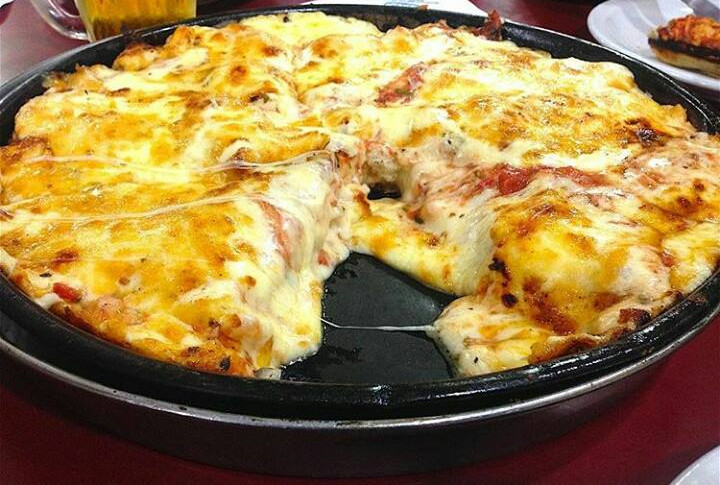

Pizza

Descripción
La pizza se prepara y consume en todo Argentina, principalmente en sus zonas
metropolitanas que tienen una masiva proporción de habitantes descendientes
de italianos. La Argentina cuenta con la mayor cantidad de pizzerías por
habitante del mundo.
La pizza en Argentina se caracteriza por su masa de mayor grosor y la abundancia
de queso mozzarella de vaca, "hasta los bordes, para que se dore y se gratine".
Una de las formas características y tradicionales de consumirla es con fainá y
el acompañamiento de vino moscato.
Ingredientes
Masa
- Masa
- Aceite de oliva 1 cda
- Agua 600 c.c.
- Harina 1 Kilo
- Levadura 10 Gramos
- Sal 1 Pizca
Pizza de muzarella
- Salsa de tomate 250 Gramos
- Muzarella 300 Gramos
- Orégano c/n
- Aceitunas verdes c/n
Preparación
Masa
- En un bowl amplio colocar harina, sal y hacer una corona.
- En el centro colocar levadura, azúcar y agua.
- Comenzar a tomar la masa con las manos y amasar en la mesada hasta formar un
bollo.
- Dividir en 4 bolos pequeños y dejar levar tapado por 30 minutos.
- Estirar en cada molde con aceite de oliva en la base y bollo hasta los bordes
y dejar levar por 5 minutos.
- Agregar sobre los moldes con masa levada salsa de tomates y llevar a horno
fuerte hasta cocinar la masa y que haga un poco de piso aprox 5 minutos.
Pizza de muzarella
- Agregar sobre una masa cocida con salsa de tomates abundante muzarella rallada y
orégano.
- Cocinar a horno a 350 °C (fuerte) hasta derretir el queso.
- Añadir un poco más de orégano y terminar con aceitunas verdes.